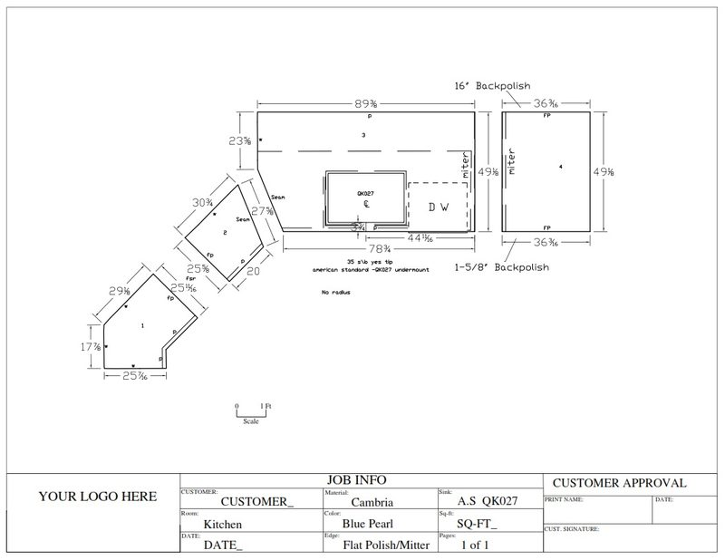
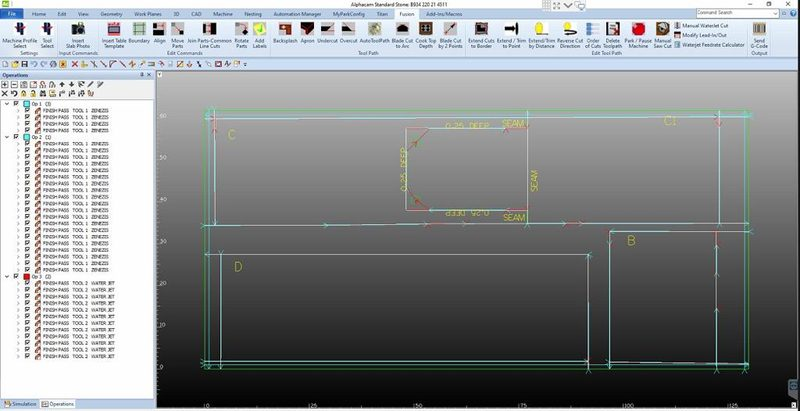
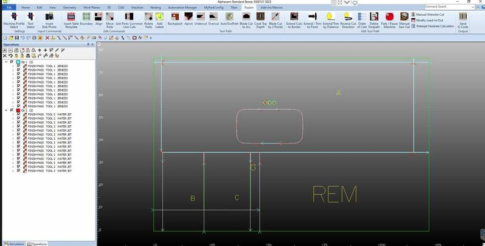

CAD drawings
Shop-ready drawings created from your templates, customer sketches, bulletins and cabinet prints. Every technician can read and interpret blueprints and create and modify drawings in CAD/CAM software.
Your iGen technician works from your drawings, bulletins, sketches and shop drawings, inside your own software and on your own machines.
Recent work includes drawings in AutoCAD, CNC programs in Alphacam for Titan CNC machines and slab layouts in Slabsmith.
Shop-ready drawings created from your templates, customer sketches, bulletins and cabinet prints. Every technician can read and interpret blueprints and create and modify drawings in CAD/CAM software.
Toolpaths assigned to your saw, waterjet and CNC programs, with the G-codes your machines need for fabrication. Programmed through remote log-in on one of your local computers.
Detailed shop drawings and PDFs for your fabrication and installation teams, produced as part of the daily workflow and uploaded to your system.
Slab layouts and nesting planned for efficient use of material, drafted alongside the job drawings.
Efficient slab layouts and nesting mean placing each piece on a digital image of the actual slab. You see exactly how the pieces fit, get the most out of every slab and keep the vein movement flowing across seams.

Full-time or part-time technicians and programmers, trained and assigned exclusively to your shop. iGen handles the hiring, training and daily supervision.
Screenshots of iGen work. Client details are removed before anything is published.





Start with one service or all four, one technician or several. They learn your process either way.